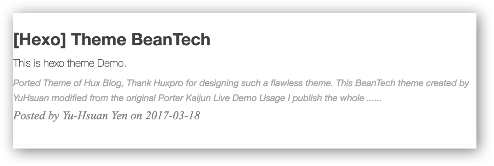

Ported Theme of Hux Blog, Thank Huxpro for designing such a flawless theme.
This BeanTech theme created by YuHsuan modified from the original Porter Kaijun

Usage
I publish the whole project for your convenience, so you can just follow the instruction down below, then you can easily customiz your own blog!
Let’s begin!!!
Init
1 | git clone https://github.com/YenYuHsuan/hexo-theme-beantech.git ./hexo-beantech |
Modify
Modify _config.yml file with your own info.
Especially the section:
Deployment
Replace to your own repo!
1 | deploy: |
Copy your avatar image to <root>/img/ and modify the _config.yml:
1 | sidebar: true # whether or not using Sidebar. |
and activate your personal widget you like
1 | widgets: # here are widget you can use, you can comment out |
if you want to add sidebar widget, please add at layout/_widget.
Signature Setup
Copy your signature image to <root>/img/signature and modify the _config.yml:
1 | signature: true # show signature |
Go to top icon Setup
My icon is using iron man, you can change to your own icon at css/image.
Post tag
You can decide to show post tags or not.
1 | home_posts_tag: true |

1 | home_posts_tag: false |

Markdown render
My markdown render engine plugin is hexo-renderer-markdown-it.
1 | # Markdown-it config |
and if you want to change the header anchor ‘ℬ’, you can go to layout/post.ejs to change it.
1 | async("https://cdn.bootcss.com/anchor-js/1.1.1/anchor.min.js",function(){ |
Hexo Basics
Some hexo command:
1 | hexo new post "<post name>" # you can change post to another layout if you want |
Have fun ^_^
Please Star this Project if you like it! Follow would also be appreciated!
Peace!